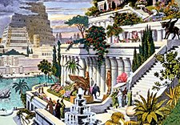
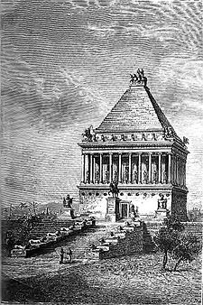
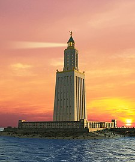

Сім чудес світу, або Сім чудес Стародавнього світу - список найбільш прославлених пам'яток античної культури часів Ойкумени, з якого до наших часів збереглась лише Піраміда Хеопса. Складання списку найславетніших поетів, філософів, полководців, великих царів, як і пам'яток архітектури і мистецтва — традиційний «малий» жанр грецької елліністичної поезії і свого роду вправа в риториці. Сам вибір числа освячений найдавнішими уявленнями про його наповненість, закінченість і досконалість, число 7 вважалося священним числом бога Аполлона (Семеро проти Фів, Сім мудреців і т. і.).
Подібно до збірників висловлювань знаменитих мудреців, збірок анекдотів і розповідей про дива, твори про Сім чудес світу були популярні в античну епоху і містили описи найграндіозніших, найпрекрасніших або в технічному сенсі найбільш захопливих будівель і пам'ятників мистецтва. Ось чому їх називали чудесами, в той час як в списку відсутні багато справжніх шедеврів стародавньої архітектури та мистецтва — Акрополь в Афінах із творінням Фідія — статуєю Афіни, Парфенон, прославлена статуя Афродіти Кнідської роботи Праксітеля і т. і. Згадки про Сім чудес з'являються у творах грецьких авторів, починаючи з епохи еллінізму. Їх треба було знати вже в школі, про них писали вчені й поети. У тексті одного єгипетського папірусу, що являв собою свого роду навчальний посібник, згадуються обов'язкові для заучування імена знаменитих законодавців, живописців, скульпторів, архітекторів, винахідників, найбільші острови, гори й річки і, нарешті, сім чудес світу. «Відбір» чудес відбувався поступово, і одні чудеса змінювали інші.
1640 року француз Д. С. Бессі відшукав у бібліотеці Ватикану невеличкий рукопис грецького філософа Філона Візантійського, що, ймовірно, вперше в III столітті до н. е. вжив у своєму творі це словосполучення.
Пізніше за Філона про дивовижні архітектурні досягнення писали і автор 37 томів «Природничої історії» Пліній Старший, і римський поет Марціал, і грецький географ Павсаній. Були також інші автори. Їх списки різнились між собою. Одні вважали такими стіни стародавнього Вавилону і Колізей, інші також згадували міст через річку Євфрат. Остаточно список утвердився лише у XVIII столітті.
Усталений перелік Семи чудес світу пов'язують з іменем Александра Македонського.
| Об'єкт | Зображення | Час створення | Місце, сучасна країна | Творці | Руйнування |
|---|---|---|---|---|---|
| Піраміда Хеопса | ~ 2550 до н. е. | Гіза, Єгипет Єгипет | Єгиптяни | Єдине з чудес, що збереглося до наших днів. | |
| Висячі Сади Семіраміди |  | ~ 600 до н. е. | Вавилон, Ірак Ірак | Вавилоняни | Після I століття до н. е. внаслідок землетрусу. |
| Статуя Зевса в Олімпії | |
435 до н. е., | Олімпія, Греція Греція | Греки — скульптор Фідій | V століття, згоріла в пожежі у Константинополі. |
| Храм Артеміди в Ефесі | |
IV століття до н. е. | Ефес, Туреччина Туреччина | Лідійці, греки, перси | Розграбований 262 н. е. готами, зруйнований землетрусом. Збережено одну колонну. |
| Мавзолей у Галікарнасі |  | 351 до н. е. | Галікарнас, Туреччина Туреччина | Карійці, перси, греки | 1494 року внаслідок землетрусу, зберігся фундамент, фрагменти. |
| Колос Родоський | між 292 і 280 до н. е. | Родос, Греція Греція | Греки | 224 (або 226) до н. е. внаслідок землетрусу. | |
| Александрійський маяк |  | III століття до н. е. | Александрія (мис Фарос), Єгипет Єгипет | Династія Птолемеїв | Поштовхи у 365, 956 і 1303 роках н. е. сильно пошкодили будівлю, а потужний землетрус 1326 року остаточно її зруйнував |
Тема роботи : Сім чудес світу. Виконав Калатур Д.І. ФІТ 3-11